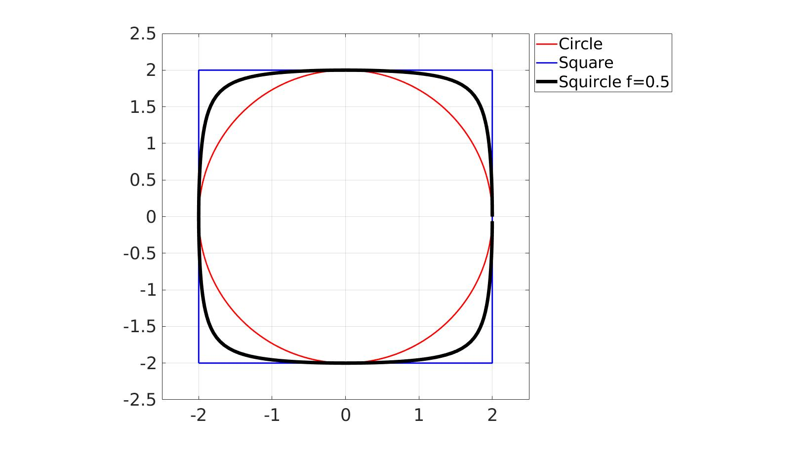
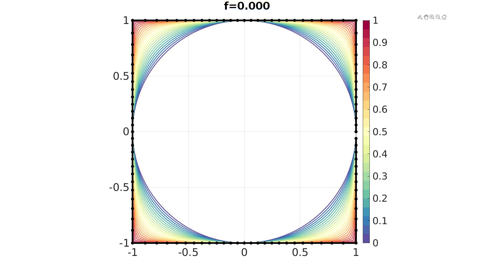
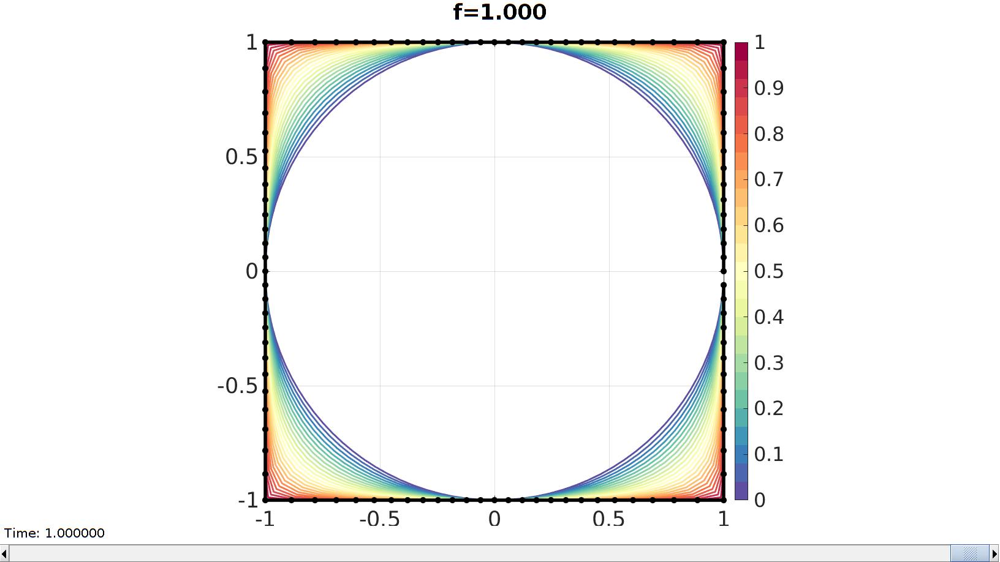

squircle
Below is a demonstration of the features of the squircle function
Contents
clear; close all; clc;
Syntax
[V]=squircle(r,f,n);
Description
The squircle is a shape intermediate between a circle and a square. This function outputs the coordinates V for a squircle using the input radius r, the weighting parameter f, and the number of points n.
See also: https://en.wikipedia.org/wiki/Squircle
This implementation is based on: https://arxiv.org/vc/arxiv/papers/1604/1604.02174v1.pdf
Examples
Example 1: Constructing a squircle
n=200; %Number of points on curve r=2; %Squircle radius
f=0.5; [V]=squircle(r,f,n);
t=linspace(0,2*pi,n)';
Vc=r*[cos(t) sin(t) zeros(size(t))]; %Circle coordinates
Vs=r*[-1 -1 0; 1 -1 0; 1 1 0; -1 1 0; -1 -1 0];
Visualization
cFigure; hold on hp1=plotV(Vc,'r-' ,'LineWidth',2); hp2=plotV(Vs,'b-' ,'LineWidth',2); hp3=plotV(V ,'k.-','LineWidth',5); axis equal; axis tight; grid on; box on; set(gca,'FontSize',25); axis(r*[-1.25 1.25 -1.25 1.25]); legend([hp1 hp2 hp3],{'Circle','Square',['Squircle ','f=',num2str(f)]},'Location','NorthEastOutSide') drawnow;
Example 2: Animate effect of varying f
n=104; %Number of points on curve r=1; %Squircle radius nSteps=25; %Number of animation steps f=linspace(0,1,nSteps);
hf=cFigure; hold on ht=gtitle(['f=',sprintf('%.3f',f(1))],25); c=spectral(nSteps); for q=1:1:nSteps [V]=squircle(r,f(q),n); hp1=plotV(V,'k-','LineWidth',2); hp1.Color=c(q,:); end hp2=plotV(V,'k.-','LineWidth',4,'MarkerSize',25); axis equal; axis tight; grid on; box on; colormap(c); colorbar; caxis([0 1]); set(gca,'FontSize',25); drawnow;
%Populate the animation structure %Create the time vector animStruct.Time=linspace(0,1,nSteps); for q=1:1:nSteps [V]=squircle(r,f(q),n); %Set entries in animation structure animStruct.Handles{q}=[hp2 hp2 ht]; %Handles of objects to animate animStruct.Props{q}={'XData','YData','String'}; %Properties of objects to animate animStruct.Set{q}={V(:,1),V(:,2),['f=',sprintf('%.3f',f(q))]}; %Property values for to set in order to animate end anim8(hf,animStruct);

GIBBON www.gibboncode.org
Kevin Mattheus Moerman, gibbon.toolbox@gmail.com
GIBBON footer text
License: https://github.com/gibbonCode/GIBBON/blob/master/LICENSE
GIBBON: The Geometry and Image-based Bioengineering add-On. A toolbox for image segmentation, image-based modeling, meshing, and finite element analysis.
Copyright (C) 2006-2021 Kevin Mattheus Moerman and the GIBBON contributors
This program is free software: you can redistribute it and/or modify it under the terms of the GNU General Public License as published by the Free Software Foundation, either version 3 of the License, or (at your option) any later version.
This program is distributed in the hope that it will be useful, but WITHOUT ANY WARRANTY; without even the implied warranty of MERCHANTABILITY or FITNESS FOR A PARTICULAR PURPOSE. See the GNU General Public License for more details.
You should have received a copy of the GNU General Public License along with this program. If not, see http://www.gnu.org/licenses/.